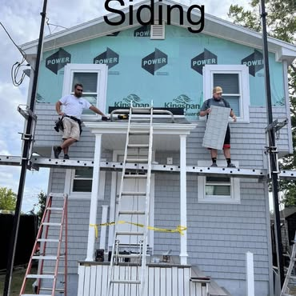
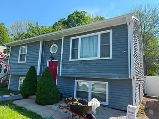
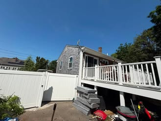
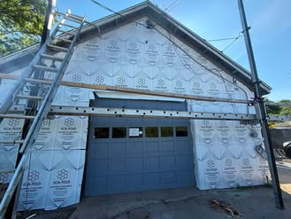
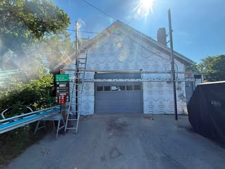
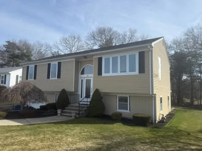
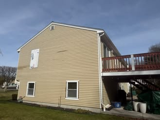
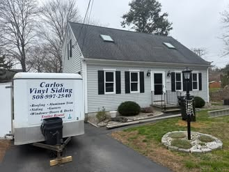

Siding installation in progress
A recent siding project showing the team at work on the home exterior.
New Bedford, Massachusetts Serving the South Coast
(508) 997-2540Recent exterior projects
Explore five recent projects. See a finish or detail you like? Choose that project as a reference when you request a quote.
Choose “Use this project as a reference” on any project. The selected project will be attached to your quote request.
Recent project gallery
Browse the project photos and descriptions below. Choose “Use this project as a reference” to add a photo from that project to your quote request.

A recent siding project showing the team at work on the home exterior.


The company shared this multi-photo before-and-after exterior project.


A second before-and-after project, shared with a set of progress and finished-work photos.


A siding update described by the company as new Double 4 vinyl siding.

A completed exterior featuring Cedar Impressions vinyl siding.